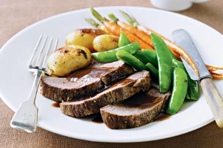

Page 10

30 minute Lamb Roast
Preparation Time
5 minutes
Cooking Time
25 minutes
Ingredients (serves 4)
750g trim lamb mini topside roasts
1 tbs olive oil
1 bunch baby (Dutch) carrots, ends trimmed, washed
1 x 400g pkt Woolworths Fresh Baby Potatoes With Butter and Herbs
5 sprigs fresh rosemary
200g sugar snap peas
60ml (1/4 cup) Woolworths Select Thick Mint Sauce
375ml (1 1/2 cups) water
40g (1/4 cup) Woolworths Select Traditional-Flavoured Instant Gravy
80ml (1/3 cup) red wine
Method
Preheat oven to 220°C. Season the lamb with salt and pepper. Heat the oil in a roasting pan over high heat. Add the lamb and cook for 1 minute each side or until browned.
Arrange carrots, potatoes (including butter from the packet) and rosemary around the lamb. Roast for 20 minutes for medium or until cooked to your liking.
Meanwhile, cook the sugar snap peas in a small saucepan of boiling water for 2 minutes or until bright green and tender crisp. Drain and return to the pan. Add the mint sauce and stir until well combined. Whisk together the water and gravy in a jug.
Transfer the lamb and vegetables to a plate and cover with foil. Place the pan over high heat. Add the wine and cook, stirring, for 1 minute. Add the gravy mixture and cook, stirring constantly, for 1 minute until the gravy thickens.
Divide the roast vegetables and sugar snap peas among serving plates. Thickly slice the lamb across the grain. Divide lamb among the plates and drizzle over the gravy to serve.